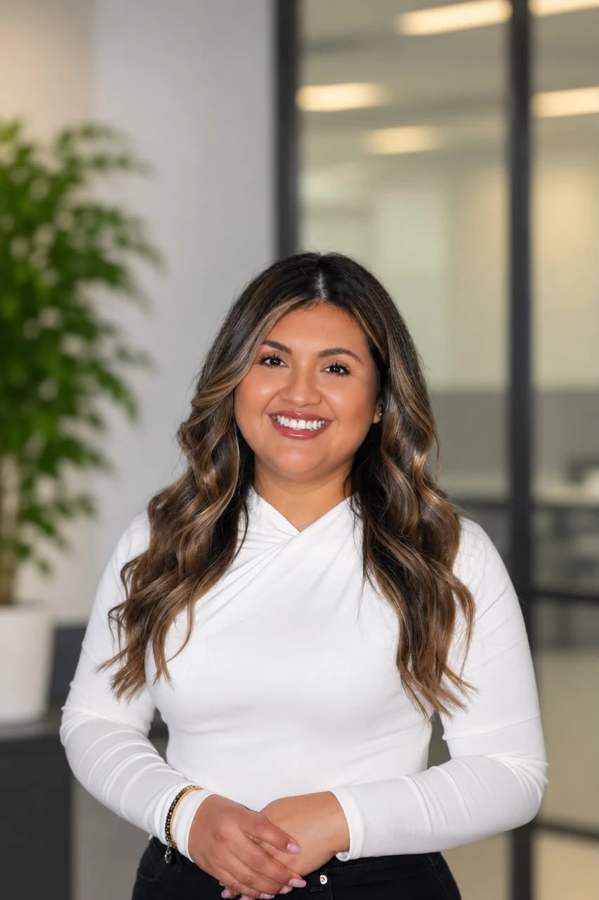

ADELAYO LAW / OUR PEOPLE
Selene Lopez
Immigration Paralegal | Consular Processing and Family-Based Immigration
Se habla español
“Immigration is more than paperwork. It's about people, families, keeping loved ones together, and creating opportunities for a brighter future.”
CONTACT OUR TEAM
From Her Own Journey to Yours
Selene Lopez immigrated to the United States when she was 11 years old. She remembers what it's like to start over in a new country: the hope, the uncertainty, and the dreams a family carries with them. That experience is why she does this work, and it's why clients so often feel at ease with her from the very first conversation.
Bringing Families Together Through Consular Processing
For six years, Selene has helped individuals and families through every stage of their immigration journeys, and consular processing is the heart of her work. When a loved one lives outside the United States, or must complete the immigrant visa process abroad, there is no room for error. A missing document or an incomplete form can mean months of delay and more time apart.
Working under the supervision of the firm's attorney, Selene guides clients through each step of the process:
- The family petition: preparing family-based petitions that begin the process
- The National Visa Center: gathering, organizing, and submitting the civil documents, financial documents, and immigrant visa application the NVC requires
- Waivers: assisting with the waivers and permissions many clients need to move forward, including Form I-601 waivers of inadmissibility, I-601A provisional unlawful presence waivers, and Form I-212 applications for permission to reapply for admission after removal
- The consular interview: helping clients prepare for their interview at a U.S. embassy or consulate, so they arrive organized, informed, and confident
- Parole: preparing parole requests for clients who need permission to enter or remain in the United States for urgent humanitarian reasons or significant public benefit
Selene knows how much is at stake at every stage. For her clients, the end of the process is a husband coming home, a parent reunited with a child, or a family finally together under one roof.
Legal Training
Selene received her legal training and certification from the Noboa Law Institute in Chicago, Illinois.
Clear Communication, in English and Spanish
Fluent in English and Spanish, Selene believes clients should never feel lost in their own case. She keeps them informed, answers their questions, explains what comes next, and makes sure every client feels heard, understood, and supported from the first meeting to the day their visa is in hand.
ADELAYO LAW / GET IN TOUCH
Let's Help Bring Your Family Closer
Have questions about consular processing or family-based immigration? Contact the Adelayo Law team to discuss the next step.
Call (602) 258-1882